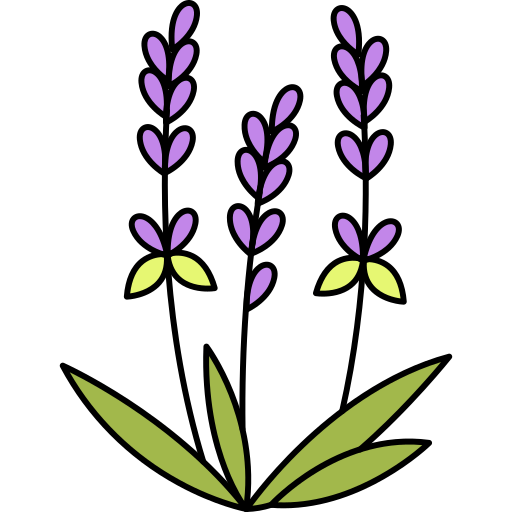
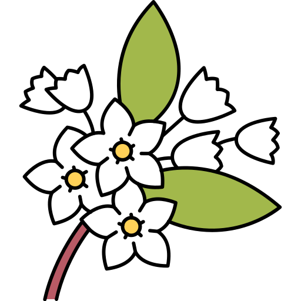

Каталог наших ароматов
Добро пожаловать в наш каталог, где вы найдете разнообразие уникальных ароматов, созданных для того, чтобы подчеркнуть вашу индивидуальность и стиль. Исследуйте наши категории и найдите свой идеальный аромат!
Цветочные ароматы
Цветочные ароматы идеально подходят для романтических натур. Они излучают нежность и женственность, создавая атмосферу весны и свежести.
Фруктовые ароматы
Фруктовые ароматы полны энергии и жизнерадостности. Они идеально подходят для повседневного использования и добавляют яркие акценты в любой образ.
Восточные ароматы
Восточные ароматы отличаются насыщенными, глубокими нотами, которые создают атмосферу загадочности и роскоши. Они идеально подходят для вечерних выходов.
Зеленые ароматы
Зеленые ароматы пронизаны свежестью трав и листьев, создавая ощущение близости к природе. Они идеально подходят для активных прогулок на свежем воздухе и дарят чувство свободы и легкости.
Деревянные ароматы
Деревянные ароматы обладают теплотой и стойкостью, создавая ощущение уюта и комфорта. Их глубокие и землистые ноты идеально подходят для осенних вечеров и дарят чувство уверенности и стабильности.
Цитрусовые ароматы
Цитрусовые ароматы наполняют атмосферу свежестью и бодростью, даря заряд энергии на весь день. Их яркие и искристые ноты идеально подходят для летних дней и активного отдыха, добавляя легкость и радость в любой момент.
Популярные ароматы
Аромат №1: "Солнечный день"
Этот свежий и легкий аромат с нотами цитрусов и зелени подарит вам ощущение солнечного дня в любое время года.
Аромат №2: "Нежный цветок"
Нежный цветочный аромат с нотами розы и жасмина создаст романтическое настроение и привлечет внимание окружающих.
Аромат №3: "Тайна востока"
Глубокий восточный аромат с нотами ванили и сандала погружает в атмосферу загадки и волшебства.